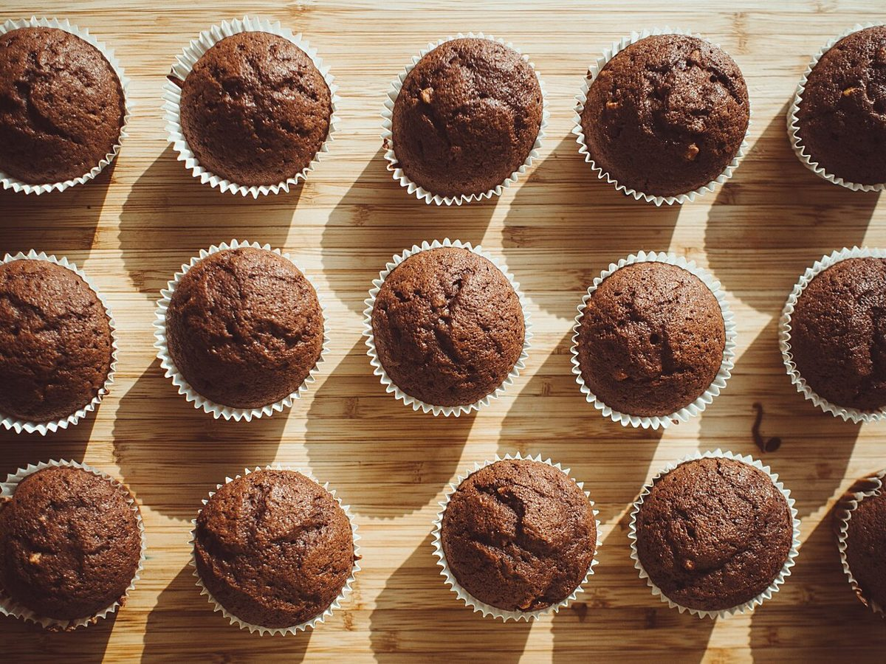
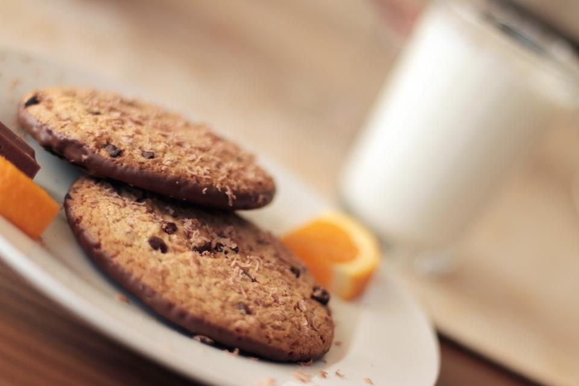
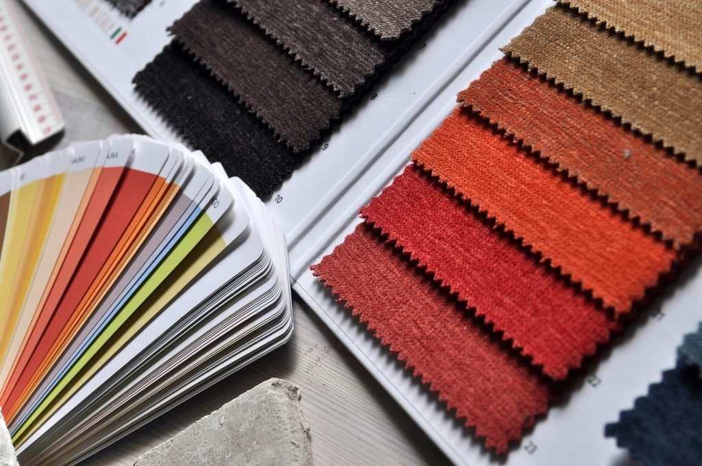

制作側の連想
「T」から思いついた、十二分の一の世界
制作側の連想で、お店の理念・由来とは無関係です。店名の「T」から、制作側が勝手に「Tiny(ちいさい)」を思い浮かべ、ミニチュア(十二分の一の縮尺)のようにページを組みました。小さな写真を並べ、気になったものを十二倍に広げて見る作りです。お店の由来や内装、提供内容とは関係ありません。
1/12 サイズで並べる(イメージ)
まずは、ちいさく。
写真は国外・撮影地不明のフリー素材で、お店のものではありません。





×12 に広げる
ひとつだけ、大きく。


ご案内
お店のこと(確認できたものだけ)
| 所在地 | 〒471-0034 愛知県豊田市小坂本町7丁目63-1 |
|---|---|
| 電話 | 0565-31-7776 |
| 営業時間 | 準備中 |
| 定休日 | 準備中 |
| ご予約 | 準備中 |
| 駐車場 | 準備中 |
| SNS | Instagram @cafe.t_fac |